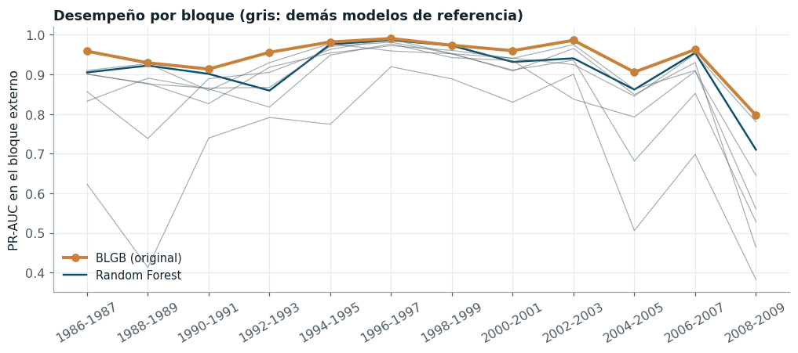
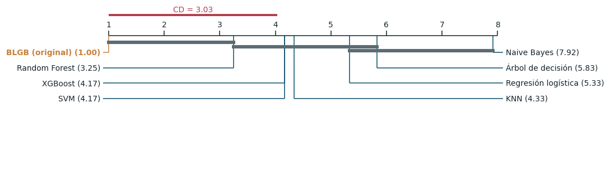
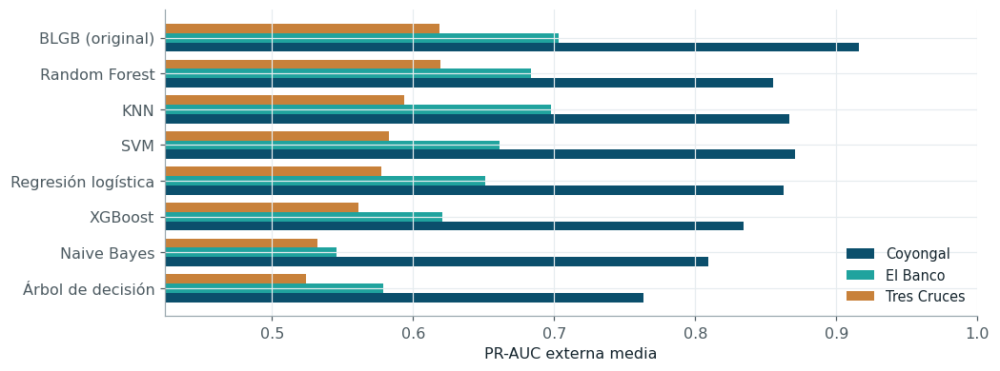
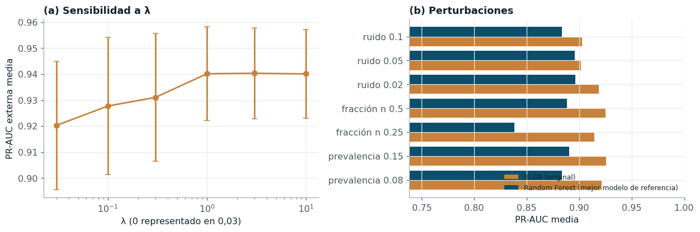
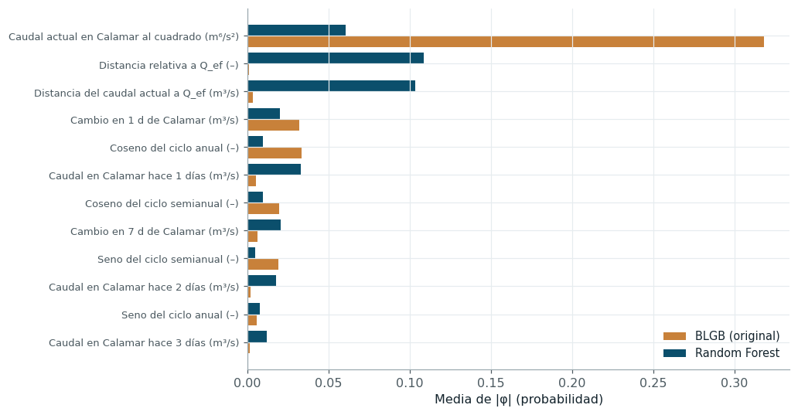

Validación estadística del modelo propuesto#
Este capítulo evalúa el modelo propuesto con el mismo protocolo que los modelos de referencia y contrasta formalmente si los supera. El criterio de superioridad se fijó antes de examinar los resultados y tiene tres condiciones simultáneas: una PR-AUC externa media mayor que la de la mejor combinación de cada uno de los siete modelos de referencia, al menos tres pruebas confirmatorias que rechacen la igualdad con un p-valor ajustado por Holm menor que 0,05 y un tamaño del efecto no despreciable (δ de Cliff de al menos 0,147 o d de Cohen de al menos 0,2). El capítulo examina además los supuestos de cada prueba, compara el modelo con métodos distribucionales y de pronóstico recientes, lo evalúa en otras tres estaciones, mide su robustez, analiza dónde se equivoca y compara su interpretación con la del mejor modelo de referencia.
Protocolo#
El modelo propuesto pasó por exactamente el mismo protocolo que los modelos de referencia: las mismas doce particiones externas leídas del mismo archivo, la misma validación interna cronológica, la misma semilla global, el mismo preprocesamiento y el mismo presupuesto de 16 evaluaciones por pliegue. Sus hiperparámetros se optimizaron con TPE y con el algoritmo genético, y se retiene el método con mayor PR-AUC externa media, el mismo criterio con que se eligió la mejor combinación de cada modelo de referencia; resultó el algoritmo genético. El universo de comparación está formado por la mejor combinación de cada uno de los siete modelos de referencia y el modelo propuesto.
Resultados por bloque#
La Figura 22 muestra la PR-AUC de cada modelo en cada uno de los doce bloques externos.

Figura 22 PR-AUC por bloque externo del modelo propuesto y de la mejor combinación de cada modelo de referencia.#
El modelo propuesto está por encima de los demás en todos los bloques, incluido el más difícil, 2008-2009, y su curva varía menos de un bloque a otro. La sección de pruebas de hipótesis cuantifica esa ventaja.
Tabla resumen#
La tabla reúne, para los ocho modelos, la PR-AUC externa, la PR-AUC en la prueba reservada con su intervalo de confianza por bloques, la ROC-AUC y los tiempos de entrenamiento e inferencia.
| Modelo | PR-AUC externa | PR-AUC prueba | IC 95 % (bloques, BCa) | ROC-AUC prueba | Entrenamiento final (s) | Inferencia (ms/fila) | |
|---|---|---|---|---|---|---|---|
| 0 | BLGB (original) | 0.9428 ± 0.0534 | 0.9654 | [0.940; 0.982] | 0.9870 | 19.7810 | 0.0193 |
| 1 | Random Forest | 0.9101 ± 0.0755 | 0.9495 | [0.911; 0.971] | 0.9806 | 5.3010 | 0.0056 |
| 2 | XGBoost | 0.9047 ± 0.0597 | 0.9411 | [0.881; 0.965] | 0.9797 | 1.6699 | 0.0039 |
| 3 | KNN | 0.8881 ± 0.1130 | 0.9377 | [0.888; 0.968] | 0.9769 | 0.1036 | 0.4250 |
| 4 | SVM | 0.8860 ± 0.1386 | 0.9496 | [0.908; 0.975] | 0.9801 | 2.3973 | 0.0273 |
| 5 | Árbol de decisión | 0.8658 ± 0.0907 | 0.8959 | [0.824; 0.934] | 0.9604 | 2.0639 | 0.0011 |
| 6 | Regresión logística | 0.8502 ± 0.1357 | 0.8910 | [0.791; 0.946] | 0.9665 | 0.6914 | 0.0012 |
| 7 | Naive Bayes | 0.7055 ± 0.1865 | 0.7553 | [0.624; 0.858] | 0.9118 | 0.6280 | 0.0024 |
En la prueba reservada 2010-2026 el modelo propuesto alcanza una PR-AUC de 0,965, frente a 0,950 del mejor modelo de referencia. Sus tiempos de entrenamiento son mayores, porque está programado en numpy y no en una biblioteca compilada, pero su inferencia sigue siendo del orden de milisegundos por día.
Supuestos de las pruebas#
La tabla siguiente verifica los supuestos de las pruebas que se aplican a continuación.
| supuesto | verificación | |
|---|---|---|
| 0 | Normalidad de las diferencias por bloque (t co... | Shapiro-Wilk p = 0.037 |
| 1 | Simetría de las diferencias (Wilcoxon) | asimetría = 0.83 |
| 2 | Independencia entre bloques | autocorrelación de orden 1 de las diferencias ... |
| 3 | Solapamiento de entrenamientos (Nadeau-Bengio) | n_test/n_train medio = 0.041 |
| 4 | Independencia entre días (DeLong, McNemar) | ACF a 1 día del objetivo ≈ 0,99: no se cumple |
Cada prueba descansa en supuestos que se verificaron antes de interpretarla. Las diferencias de PR-AUC por bloque entre el modelo propuesto y Random Forest se apartan moderadamente de la normalidad (Shapiro-Wilk, p = 0,037) y tienen una asimetría positiva de 0,83, producida por los bloques difíciles, donde la ventaja del modelo propuesto es mayor. Con doce bloques, ese apartamiento debilita la prueba t, que por eso se usa como apoyo, y convierte a la prueba de Wilcoxon, que no supone normalidad y es poco sensible a una asimetría moderada, en la prueba principal; ninguna de las dos depende de que la ventaja sea igual en todos los bloques. Los bloques no son independientes en sentido estricto, porque comparten días de entrenamiento: la ventana crece y cada modelo se entrena con los bloques anteriores. La t de Nadeau y Bengio [Nadeau and Bengio, 2003] corrige precisamente esa dependencia inflando la varianza por el factor \((1/k + n_{\text{test}}/n_{\text{train}})\), con una razón media de 0,041. La autocorrelación de las diferencias entre bloques consecutivos es -0,28, pequeña y negativa, de modo que no hay arrastre de la ventaja entre bloques vecinos. En cambio, DeLong y McNemar suponen independencia entre días, que la autocorrelación del caudal viola de forma grave; por eso su uso en datos temporales es cuestionable, y aquí se reportan como complemento sin contar entre las pruebas confirmatorias. Su lugar lo ocupa el bootstrap estacionario sobre la prueba reservada, que respeta la dependencia.
Pruebas de hipótesis#
La tabla presenta cada prueba con su hipótesis nula, sus supuestos, su estadístico, el p-valor crudo y ajustado y la conclusión. La última columna de p-valores aplica un segundo ajuste de Holm a la familia de las tres pruebas confirmatorias.
| prueba | hipótesis nula | supuestos | estadístico | p crudo | p ajustado | p ajustado (familia confirmatoria, Holm) | efecto | conclusión | |
|---|---|---|---|---|---|---|---|---|---|
| 0 | Friedman (ómnibus) sobre 8 modelos | Todos los modelos tienen el mismo rango medio | Bloques externos pareados (12); particiones cr... | χ² = 56.42 (gl = 7); F_ID = 22.50 | 7.81e-10 | 7.81e-10 | — | rango medio del original = 1.00 | Se rechaza H0 |
| 1 | Nemenyi: original frente a Random Forest | Igual rango medio | Post-hoc de Friedman, control del error familiar | |Δ rango| = 2.25; CD = 3.03 | 0.3218 | 0.3218 | — | — | No significativa (CD) |
| 2 | Wilcoxon de rangos con signo + Holm (7 compara... | La mediana de la diferencia de PR-AUC frente a... | Diferencias pareadas por bloque, simetría apro... | W = 78; victorias 12.0/12.0 | 2.44e-04 | 0.0017 | 0.0045 | δ de Cliff = 0.347 (mediano) | Se rechaza H0 |
| 3 | t corregida de Nadeau-Bengio + Holm (7 compara... | La diferencia media de PR-AUC frente a Random ... | Varianza inflada por (1/k + n_test/n_train) pa... | t = 2.81 (gl = 11) | 0.0084 | 0.0264 | 0.0264 | d de Cohen (pareado) = 0.99 | Se rechaza H0 |
| 4 | Bayesiana de rangos con signo (ROPE ±0,01) | — (probabilidades posteriores de cada región) | Proceso de Dirichlet sobre las diferencias por... | P(original mejor) = 0.923; P(equiv.) = 0.077 | — | — | — | P(benchmark mejor) = 0.000 | No concluyente |
| 5 | Bootstrap estacionario BCa de Δ PR-AUC (prueba... | Δ PR-AUC ≤ 0 | Dependencia temporal; bloque medio de 133 días... | Δ = 0.0159; IC 95 % [0.0063; 0.0326] | 0.0015 | 0.0015 | 0.0045 | Δ PR-AUC = 0.0159 | Se rechaza H0 |
| 6 | DeLong (AUC-ROC, prueba 2010-2026; complementa... | AUC del original ≤ AUC del benchmark | Supone independencia entre días: se reporta co... | z = 7.94; AUC 0.9870 frente a 0.9806 | 9.99e-16 | 9.99e-16 | — | Δ AUC = 0.0064 | Se rechaza H0 |
| 7 | McNemar (umbral 0,5, prueba 2010-2026; complem... | Igual tasa de error | Supone independencia entre días: complementaria | χ² = 5.51; discordantes 136 / 99 | 0.0189 | 0.0189 | — | — | Se rechaza H0 |
La tabla anterior se calcula en scripts/estadistica.py, cuya función pruebas_original aplica
en orden Friedman y Nemenyi, Wilcoxon con Holm, la t de Nadeau y Bengio, la prueba bayesiana de
rangos con signo, el bootstrap estacionario sobre la prueba reservada y, como complemento,
DeLong y McNemar. Las funciones de cada prueba están en src/stats_tests.py; ambos códigos se
muestran a continuación.
def friedman(tabla: pd.DataFrame) -> dict:
"""Prueba de Friedman sobre una tabla pliegues × modelos (mayor es mejor).
Devuelve el estadístico χ²_F, la corrección F de Iman-Davenport y los rangos promedio
(rango 1 = mejor).
"""
rangos = tabla.rank(axis=1, ascending=False)
n, k = tabla.shape
chi2, p = st.friedmanchisquare(*[tabla[c].values for c in tabla.columns])
ff = (n - 1) * chi2 / (n * (k - 1) - chi2) if n * (k - 1) != chi2 else np.inf
p_ff = 1 - st.f.cdf(ff, k - 1, (k - 1) * (n - 1))
return {"chi2": float(chi2), "gl": k - 1, "p": float(p), "F_iman_davenport": float(ff),
"p_iman_davenport": float(p_ff), "rangos": rangos.mean().sort_values(),
"n_bloques": n, "k_modelos": k}
def nemenyi(rangos_promedio: pd.Series, n_bloques: int, alpha: float = 0.05) -> dict:
"""Diferencia crítica de Nemenyi: CD = q_α √(k(k+1)/(6N)) (Demšar, 2006)."""
k = len(rangos_promedio)
q = st.studentized_range.ppf(1 - alpha, k, np.inf) / np.sqrt(2)
cd = q * np.sqrt(k * (k + 1) / (6 * n_bloques))
pares = []
for a, b in combinations(rangos_promedio.index, 2):
dif = abs(rangos_promedio[a] - rangos_promedio[b])
z = dif / np.sqrt(k * (k + 1) / (6 * n_bloques))
p = 1 - st.studentized_range.cdf(z * np.sqrt(2), k, np.inf)
pares.append({"modelo_a": a, "modelo_b": b, "dif_rangos": dif, "p_nemenyi": p,
"significativo": dif > cd})
return {"cd": float(cd), "q_alpha": float(q), "pares": pd.DataFrame(pares)}
def wilcoxon_holm(tabla: pd.DataFrame, referencia: str, alternativa: str = "greater") -> pd.DataFrame:
"""Wilcoxon de rangos con signo de ``referencia`` contra cada modelo, con ajuste de Holm."""
filas = []
for c in tabla.columns:
if c == referencia:
continue
dif = tabla[referencia] - tabla[c]
if np.allclose(dif, 0): # variantes idénticas: no hay evidencia de diferencia
w_stat, p_val = np.nan, 1.0
else:
res = st.wilcoxon(tabla[referencia], tabla[c], alternative=alternativa, zero_method="zsplit")
w_stat, p_val = res.statistic, res.pvalue
filas.append({"modelo": c, "dif_media": dif.mean(), "W": w_stat, "p": p_val,
"delta_cliff": delta_cliff(tabla[referencia], tabla[c]),
"victorias": int((dif > 0).sum()), "n": len(dif)})
out = pd.DataFrame(filas)
out["p_holm"] = holm(out.p.values)
return out.sort_values("p")
def holm(p: np.ndarray) -> np.ndarray:
"""Valores p ajustados por Holm-Bonferroni (control del error familiar)."""
p = np.asarray(p, float)
m = len(p)
orden = np.argsort(p)
ajust = np.empty(m)
acum = 0.0
for r, i in enumerate(orden):
acum = max(acum, (m - r) * p[i])
ajust[i] = min(1.0, acum)
return ajust
def nadeau_bengio(a, b, n_train: float, n_test: float, alternativa: str = "greater") -> dict:
"""Prueba t corregida de Nadeau y Bengio (2003) para pliegues dependientes.
La varianza de la diferencia media se infla por (1/k + n_test/n_train), que corrige la
correlación inducida por el solapamiento de los conjuntos de entrenamiento.
"""
d = np.asarray(a, float) - np.asarray(b, float)
k = len(d)
var = d.var(ddof=1)
se = np.sqrt((1 / k + n_test / n_train) * var)
t = d.mean() / se if se > 0 else np.inf
if alternativa == "greater":
p = 1 - st.t.cdf(t, k - 1)
elif alternativa == "less":
p = st.t.cdf(t, k - 1)
else:
p = 2 * (1 - st.t.cdf(abs(t), k - 1))
return {"t": float(t), "gl": k - 1, "p": float(p), "dif_media": float(d.mean()),
"se_corregido": float(se), "d_cohen": d_cohen_pareado(d)}
def delta_cliff(a, b) -> float:
"""δ de Cliff: P(A > B) − P(A < B); |δ| < 0.147 despreciable, < 0.33 pequeño, < 0.474 mediano."""
a, b = np.asarray(a, float), np.asarray(b, float)
dif = a[:, None] - b[None, :]
return float(((dif > 0).sum() - (dif < 0).sum()) / dif.size)
def d_cohen_pareado(dif) -> float:
"""d de Cohen para diferencias pareadas: media / desviación estándar."""
dif = np.asarray(dif, float)
return float(dif.mean() / dif.std(ddof=1)) if dif.std(ddof=1) > 0 else np.inf
def indices_estacionario(n: int, media_bloque: float, rng) -> np.ndarray:
"""Índices del bootstrap estacionario de Politis y Romano (1994)."""
idx = np.empty(n, dtype=int)
idx[0] = rng.integers(n)
nuevos = rng.random(n) < 1 / media_bloque
inicios = rng.integers(n, size=n)
for t in range(1, n):
idx[t] = inicios[t] if nuevos[t] else (idx[t - 1] + 1) % n
return idx
def bootstrap_bloques(estadistico, *arreglos, media_bloque: float | None = None,
n_boot: int = 2000, alpha: float = 0.05, seed: int = SEED,
metodo: str = "bca") -> dict:
"""Intervalo de confianza por bootstrap estacionario, percentil o BCa por bloques.
Parameters
----------
estadistico : callable
``estadistico(*arreglos)`` → float.
arreglos : arrays de igual longitud, en orden temporal.
media_bloque : float, optional
Longitud media de bloque; por defecto la de Politis-White sobre el primer arreglo.
metodo : {"bca", "percentil"}
En BCa, el sesgo se corrige con la proporción de réplicas bajo el estimador y la
aceleración se estima con un jackknife que elimina bloques completos.
"""
arreglos = [np.asarray(a) for a in arreglos]
n = len(arreglos[0])
rng = np.random.default_rng(seed)
if media_bloque is None:
media_bloque = longitud_bloque(arreglos[0].astype(float))
theta = estadistico(*arreglos)
reps = []
for _ in range(n_boot):
i = indices_estacionario(n, media_bloque, rng)
try:
reps.append(estadistico(*[a[i] for a in arreglos]))
except ValueError:
continue
reps = np.asarray(reps, float)
reps = reps[np.isfinite(reps)]
lo, hi = np.percentile(reps, [100 * alpha / 2, 100 * (1 - alpha / 2)])
if metodo == "bca":
z0 = st.norm.ppf(np.clip((reps < theta).mean(), 1e-6, 1 - 1e-6))
L = int(np.ceil(media_bloque))
bloques = np.array_split(np.arange(n), max(10, n // L))
jack = []
for bl in bloques:
mask = np.ones(n, bool)
mask[bl] = False
try:
jack.append(estadistico(*[a[mask] for a in arreglos]))
except ValueError:
continue
jack = np.asarray(jack)
dj = jack.mean() - jack
acel = (dj ** 3).sum() / (6 * ((dj ** 2).sum()) ** 1.5) if (dj ** 2).sum() > 0 else 0.0
za = st.norm.ppf([alpha / 2, 1 - alpha / 2])
adj = st.norm.cdf(z0 + (z0 + za) / (1 - acel * (z0 + za)))
lo, hi = np.percentile(reps, 100 * adj)
return {"estimacion": float(theta), "ic_inf": float(lo), "ic_sup": float(hi),
"media_bloque": float(media_bloque), "n_boot": int(len(reps)), "metodo": metodo}
def pruebas_original(tabla, mejores, n_tr, n_te):
datos = cargar_datos()
ref = mejores.sort_values("pr_auc_mean", ascending=False).iloc[0].modelo
filas = []
# 1. Friedman (global) con el modelo original en el universo
fr = friedman(tabla)
ne = nemenyi(fr["rangos"], fr["n_bloques"])
par_ref = ne["pares"].query("(modelo_a == 'original' and modelo_b == @ref) or "
"(modelo_b == 'original' and modelo_a == @ref)").iloc[0]
filas.append({"prueba": "Friedman (ómnibus) sobre 8 modelos", "hipótesis nula": "Todos los modelos tienen el mismo rango medio",
"supuestos": f"Bloques externos pareados ({fr['n_bloques']}); particiones cronológicas walk-forward",
"estadístico": f"χ² = {fr['chi2']:.2f} (gl = {fr['gl']}); F_ID = {fr['F_iman_davenport']:.2f}",
"p crudo": fr["p"], "p ajustado": fr["p"], "efecto": f"rango medio del original = {fr['rangos']['original']:.2f}",
"conclusión": "Se rechaza H0" if fr["p"] < ALFA else "No se rechaza H0", "confirmatoria": False})
filas.append({"prueba": f"Nemenyi: original frente a {NOMBRES_MODELO[ref]}", "hipótesis nula": "Igual rango medio",
"supuestos": "Post-hoc de Friedman, control del error familiar",
"estadístico": f"|Δ rango| = {par_ref.dif_rangos:.2f}; CD = {ne['cd']:.2f}",
"p crudo": par_ref.p_nemenyi, "p ajustado": par_ref.p_nemenyi,
"efecto": "—", "conclusión": "Diferencia significativa" if par_ref.significativo else "No significativa (CD)",
"confirmatoria": bool(par_ref.significativo)})
# 2. Wilcoxon-Holm del original contra los 7 benchmarks
wh = wilcoxon_holm(tabla, "original")
w_ref = wh.set_index("modelo").loc[ref]
dif = tabla["original"] - tabla[ref]
filas.append({"prueba": "Wilcoxon de rangos con signo + Holm (7 comparaciones)",
"hipótesis nula": f"La mediana de la diferencia de PR-AUC frente a {NOMBRES_MODELO[ref]} es ≤ 0",
"supuestos": "Diferencias pareadas por bloque, simetría aproximada; unilateral por hipótesis a priori",
"estadístico": f"W = {w_ref.W:.0f}; victorias {w_ref.victorias}/{w_ref.n}",
"p crudo": w_ref.p, "p ajustado": w_ref.p_holm,
"efecto": f"δ de Cliff = {w_ref.delta_cliff:.3f} ({magnitud_cliff(w_ref.delta_cliff)})",
"conclusión": "Se rechaza H0" if w_ref.p_holm < ALFA else "No se rechaza H0",
"confirmatoria": bool(w_ref.p_holm < ALFA)})
# 3. t corregida de Nadeau-Bengio contra los 7, con Holm
nb = {m: nadeau_bengio(tabla["original"], tabla[m], n_tr, n_te) for m in tabla.columns if m != "original"}
p_nb = holm(np.array([v["p"] for v in nb.values()]))
nb_adj = dict(zip(nb, p_nb))
filas.append({"prueba": "t corregida de Nadeau-Bengio + Holm (7 comparaciones)",
"hipótesis nula": f"La diferencia media de PR-AUC frente a {NOMBRES_MODELO[ref]} es ≤ 0",
"supuestos": "Varianza inflada por (1/k + n_test/n_train) para pliegues que comparten entrenamiento",
"estadístico": f"t = {nb[ref]['t']:.2f} (gl = {nb[ref]['gl']})",
"p crudo": nb[ref]["p"], "p ajustado": nb_adj[ref],
"efecto": f"d de Cohen (pareado) = {nb[ref]['d_cohen']:.2f}",
"conclusión": "Se rechaza H0" if nb_adj[ref] < ALFA else "No se rechaza H0",
"confirmatoria": bool(nb_adj[ref] < ALFA)})
# 4. Prueba bayesiana de rangos con signo (ROPE = 0.01 de PR-AUC)
bs = bayes_signed_rank(tabla["original"], tabla[ref], rope=0.01)
filas.append({"prueba": "Bayesiana de rangos con signo (ROPE ±0,01)",
"hipótesis nula": "— (probabilidades posteriores de cada región)",
"supuestos": "Proceso de Dirichlet sobre las diferencias por bloque (Benavoli et al., 2017)",
"estadístico": f"P(original mejor) = {bs['p_A_mejor']:.3f}; P(equiv.) = {bs['p_equivalentes']:.3f}",
"p crudo": np.nan, "p ajustado": np.nan, "efecto": f"P(benchmark mejor) = {bs['p_B_mejor']:.3f}",
"conclusión": "Superioridad práctica (P > 0,95)" if bs["p_A_mejor"] > 0.95 else "No concluyente",
"confirmatoria": False})
# 5. Bootstrap estacionario BCa de la diferencia de PR-AUC en la prueba 2010-2026
fin = {r["modelo"]: r for r in pickle.load(open(RESULTADOS / "final_clf.pkl", "rb"))}
fo = pickle.load(open(RESULTADOS / "final_original.pkl", "rb"))[0]
y = datos.y_clf_test.values
s_o, s_r = fo["pred_test"], fin[ref]["pred_test"]
L = longitud_bloque(y.astype(float))
ic = bootstrap_bloques(lambda yy, a, b: average_precision_score(yy, a) - average_precision_score(yy, b),
y, s_o, s_r, media_bloque=L, n_boot=2000)
# p-valor bootstrap unilateral: proporción de réplicas con diferencia ≤ 0
rng = np.random.default_rng(SEED)
from src.stats_tests import indices_estacionario
reps = []
for _ in range(2000):
i = indices_estacionario(len(y), L, rng)
reps.append(average_precision_score(y[i], s_o[i]) - average_precision_score(y[i], s_r[i]))
p_boot = float((np.asarray(reps) <= 0).mean())
filas.append({"prueba": "Bootstrap estacionario BCa de Δ PR-AUC (prueba 2010-2026)",
"hipótesis nula": "Δ PR-AUC ≤ 0", "supuestos": f"Dependencia temporal; bloque medio de {L} días (Politis-White)",
"estadístico": f"Δ = {ic['estimacion']:.4f}; IC 95 % [{ic['ic_inf']:.4f}; {ic['ic_sup']:.4f}]",
"p crudo": p_boot, "p ajustado": p_boot, "efecto": f"Δ PR-AUC = {ic['estimacion']:.4f}",
"conclusión": "Se rechaza H0" if (p_boot < ALFA and ic["ic_inf"] > 0) else "No se rechaza H0",
"confirmatoria": bool(p_boot < ALFA and ic["ic_inf"] > 0)})
# 6. DeLong en la prueba (complementaria por la dependencia temporal)
dl = delong(y, s_o, s_r)
filas.append({"prueba": "DeLong (AUC-ROC, prueba 2010-2026; complementaria)",
"hipótesis nula": "AUC del original ≤ AUC del benchmark",
"supuestos": "Supone independencia entre días: se reporta como complemento, no se incluye entre las confirmatorias",
"estadístico": f"z = {dl['z']:.2f}; AUC {dl['auc_a']:.4f} frente a {dl['auc_b']:.4f}",
"p crudo": dl["p_unilateral"], "p ajustado": dl["p_unilateral"], "efecto": f"Δ AUC = {dl['dif']:.4f}",
"conclusión": "Se rechaza H0" if dl["p_unilateral"] < ALFA else "No se rechaza H0", "confirmatoria": False})
mc = mcnemar(y, (s_o >= .5).astype(int), (s_r >= .5).astype(int))
filas.append({"prueba": "McNemar (umbral 0,5, prueba 2010-2026; complementaria)",
"hipótesis nula": "Igual tasa de error", "supuestos": "Supone independencia entre días: complementaria",
"estadístico": f"χ² = {mc['chi2']:.2f}; discordantes {mc['a_acierta_b_falla']} / {mc['b_acierta_a_falla']}",
"p crudo": mc["p"], "p ajustado": mc["p"], "efecto": "—",
"conclusión": "Se rechaza H0" if mc["p"] < ALFA else "No se rechaza H0", "confirmatoria": False})
pr = pd.DataFrame(filas)
# Ajuste de Holm sobre la familia de pruebas confirmatorias que cuentan para R3
conf = pr.prueba.str.startswith(("Wilcoxon", "t corregida", "Bootstrap"))
pr.loc[conf, "p ajustado (familia confirmatoria, Holm)"] = holm(pr.loc[conf, "p ajustado"].values)
pr["confirmatoria"] = pr["confirmatoria"] & (pr["p ajustado (familia confirmatoria, Holm)"].fillna(1) < ALFA) | (
pr.prueba.str.startswith("Nemenyi") & pr.confirmatoria)
detalle = {"ref": ref, "friedman": fr, "nemenyi": ne, "wilcoxon": wh, "nadeau_bengio": nb,
"nb_holm": nb_adj, "bayes": bs, "bootstrap": ic, "p_boot": p_boot, "delong": dl, "mcnemar": mc,
"dif": dif}
return pr, detalle
La Figura 23 resume la prueba global de Friedman y el análisis post hoc de Nemenyi sobre los ocho modelos.

Figura 23 Diagrama de diferencia crítica con el modelo propuesto incluido en el universo (PR-AUC, 12 bloques).#
La Figura 22 resume el resultado central: el modelo propuesto obtiene la mayor PR-AUC en 12 de los 12 bloques frente al conjunto de los siete modelos de referencia, y supera a Random Forest en 12 de 12. Su PR-AUC externa media es 0,9428 ± 0,0534, frente a 0,9101 ± 0,0755 del mejor modelo de referencia, una diferencia de 0,0327, y su desviación entre bloques es también menor.
La secuencia de pruebas parte de una prueba global y desciende a comparaciones dirigidas. La prueba global de Friedman, con el modelo propuesto incluido en el universo de ocho modelos, rechaza la igualdad de rangos (χ² = 56,42, p = 7,8 × 10⁻¹⁰), y el modelo propuesto ocupa el rango medio 1,00, es decir, el primer lugar en todos los bloques. La diferencia crítica de Nemenyi con ocho modelos y doce bloques es de 3,03 rangos, y la distancia entre el modelo propuesto y Random Forest (3,25) no la supera: Nemenyi, diseñado para controlar el error en las 28 comparaciones posibles entre los ocho modelos, carece de potencia con doce bloques y no permite separar a los dos primeros. Por eso se usa, como análisis post hoc del procedimiento global, la prueba de Wilcoxon con corrección de Holm, que solo compara al modelo de interés con cada uno de los demás (siete comparaciones) y es la apropiada cuando la pregunta es si un modelo concreto supera a los otros [Demšar, 2006].
Tres pruebas confirmatorias rechazan la hipótesis de igual desempeño. La de Wilcoxon, unilateral porque la hipótesis de superioridad se fijó antes de ver los resultados, da W = 78 con doce victorias en doce bloques, el máximo posible, y un p-valor ajustado por Holm de 0,0017. La t corregida de Nadeau y Bengio, que infla la varianza para tener en cuenta el solapamiento de los entrenamientos, da t = 2,81 con p ajustado de 0,026. El bootstrap estacionario sobre la prueba reservada 2010-2026 estima una diferencia de PR-AUC de 0,016, con un intervalo BCa del 95 % [0,006; 0,033] que excluye el cero (p = 0,0015). Tras un segundo ajuste de Holm sobre la familia de estas tres pruebas, las tres siguen por debajo de 0,05. El tamaño del efecto no es despreciable con ninguno de los dos criterios fijados: el δ de Cliff es 0,347, un efecto mediano según los umbrales de Romano et al. [Romano et al., 2006], y la d de Cohen de las diferencias pareadas es 0,99, un efecto grande. El δ de Cliff no pareado subestima la ventaja porque compara las distribuciones completas de PR-AUC por bloque, cuya variación entre años húmedos y secos es mayor que la diferencia entre modelos; la d pareada, que elimina esa variación, la refleja mejor.
Dos pruebas se reportan sin contar entre las confirmatorias. DeLong y McNemar sobre la prueba reservada rechazan la igualdad, pero suponen independencia entre días, que la autocorrelación viola; sus p-valores son por eso optimistas y solo se presentan como complemento. La prueba bayesiana de rangos con signo, con una región de equivalencia práctica de ±0,01 de PR-AUC, asigna una probabilidad posterior de 0,92 a la superioridad del modelo propuesto, de 0,08 a la equivalencia y de cero a la superioridad del modelo de referencia: no alcanza el umbral convencional de 0,95 para declarar superioridad práctica, lo que refleja que en varios bloques la ventaja es menor de una centésima. Con el criterio fijado al inicio del capítulo (media externa mayor que la de todos los modelos de referencia, al menos tres pruebas confirmatorias con p ajustado menor que 0,05 y efecto no despreciable), el veredicto es que el modelo propuesto es superior a los modelos de referencia.
Comparación con métodos recientes#
Superar a los modelos de referencia no basta para justificar un modelo nuevo: también debe
compararse con los métodos recientes más próximos. Se evaluaron dos grupos, con el mismo
protocolo y el mismo presupuesto de búsqueda (TPE, 16 evaluaciones). El primero reúne los
métodos de regresión distribucional: NGBoost [Duan et al., 2020], que ajusta por boosting los
parámetros de una distribución normal del mismo cambio logarítmico del caudal, y un enfoque de dos
etapas, regresión XGBoost del cambio logarítmico con una dispersión gaussiana constante. El
segundo es la familia LTSF-Linear de pronóstico de largo plazo de series de tiempo
[Zeng et al., 2023], que mostró que modelos lineales simples superan a las arquitecturas basadas en
transformers en los conjuntos de referencia del área y es hoy la comparación obligada para
cualquier pronosticador más complejo. La familia tiene tres miembros: Linear, una capa lineal
sobre la ventana de historia del logaritmo del caudal; NLinear, que antes resta a la ventana su
último valor para protegerse de los cambios de nivel; y DLinear, que la descompone con una media
móvil en tendencia y estacionalidad y proyecta cada componente con su propia capa. Los tres se
alimentan con hasta 365 días de historia de Calamar y, si la optimización lo elige, de Puerto
Salgar, y su implementación está en src/dlinear.py. En todos los casos la probabilidad de banda
se obtiene integrando la distribución predicha entre los límites; para los modelos LTSF-Linear,
que son pronosticadores puntuales, se supone un residuo gaussiano cuya dispersión se estima fuera
de muestra en el último 15 % del entrenamiento. La tabla compara su PR-AUC externa con la del
modelo propuesto, bloque a bloque.
| Modelo | PR-AUC externa | Δ frente a BLGB | p Wilcoxon | p Nadeau-Bengio | victorias de BLGB | p Wilcoxon (Holm) | p Nadeau-Bengio (Holm) | |
|---|---|---|---|---|---|---|---|---|
| 0 | BLGB, TPE | 0.9396 ± 0.0645 | NaN | NaN | NaN | NaN | NaN | NaN |
| 1 | BLGB, genético | 0.9428 ± 0.0534 | NaN | NaN | NaN | NaN | NaN | NaN |
| 2 | DLinear, TPE | 0.8547 ± 0.0922 | -0.0881 | 0.0002 | 0.0018 | 12.0 | 0.0012 | 0.0088 |
| 3 | Dos etapas (XGBoost + gaussiana), TPE | 0.9399 ± 0.0445 | -0.0029 | 0.3667 | 0.3618 | 5.0 | 0.3667 | 0.7237 |
| 4 | Linear, TPE | 0.8706 ± 0.0873 | -0.0722 | 0.0002 | 0.0070 | 12.0 | 0.0012 | 0.0209 |
| 5 | NGBoost, TPE | 0.9415 ± 0.0454 | -0.0013 | 0.0757 | 0.4332 | 10.0 | 0.1514 | 0.7237 |
| 6 | NLinear, TPE | 0.8468 ± 0.1017 | -0.0960 | 0.0002 | 0.0039 | 12.0 | 0.0012 | 0.0158 |
La comparación con los dos competidores distribucionales es la parte menos favorable de este capítulo. NGBoost y el enfoque de dos etapas alcanzan PR-AUC externas medias prácticamente iguales a las de BLGB, y ninguna de las pruebas pareadas distingue a BLGB de ellos. La lectura honesta es que la mayor parte de la ventaja sobre los clasificadores proviene de la idea de modelar la distribución del caudal futuro y no del mecanismo específico de la pérdida híbrida: cualquier método distribucional razonable captura la información que la etiqueta binaria descarta. Frente a NGBoost, BLGB gana 10 de los 12 bloques, pero por márgenes tan pequeños que Wilcoxon no los distingue tras Holm (p = 0,15). Lo que BLGB añade es, por tanto, modesto en discriminación y se concentra en otros aspectos: un único procedimiento que optimiza directamente la probabilidad del evento y que produce probabilidades bien calibradas sin recalibración posterior (ECE de 0,018 en la prueba), la garantía de descenso de la búsqueda lineal y la posibilidad de ponderar el evento mediante λ cuando la familia gaussiana esté mal especificada. Este resultado no cambia el veredicto frente a los modelos de referencia, pero precisa la afirmación de novedad: la contribución es la formulación del problema como predicción distribucional con límites móviles y su resolución con una pérdida estrictamente propia, más que una ganancia de exactitud sobre NGBoost.
La familia LTSF-Linear ocupa el extremo opuesto. El modelo propuesto supera a cada uno de sus tres miembros en los doce bloques, con diferencias significativas tras el ajuste de Holm, y los tres quedan también por debajo de Random Forest. La tabla siguiente los evalúa en la prueba reservada, como clasificadores de la banda y como pronosticadores del caudal.
| Modelo | PR-AUC prueba | IC 95 % (bloques, BCa) | |
|---|---|---|---|
| 0 | BLGB (propuesto) | 0.9654 | [0.940; 0.982] |
| 1 | Random Forest | 0.9495 | [0.911; 0.971] |
| 2 | DLinear | 0.9069 | [0.822; 0.953] |
| 3 | NLinear | 0.9041 | [0.812; 0.952] |
| 4 | Linear | 0.8998 | [0.811; 0.947] |
| Pronóstico del caudal | RMSE prueba (m³/s) | |
|---|---|---|
| 0 | DLinear | 793.7 |
| 1 | NLinear | 802.5 |
| 2 | Linear | 808.3 |
| 3 | SVR (mejor regresor) | 642.8 |
| 4 | Persistencia | 984.8 |
Los tres modelos LTSF-Linear alcanzan PR-AUC externas medias entre 0,847 y 0,871 y, en la prueba reservada, entre 0,900 y 0,907, por debajo del modelo propuesto y del mejor modelo de referencia, que supera a cada uno en al menos 9 de los 12 bloques. Entre ellos no hay diferencias atribuibles al diseño: la prueba de Friedman sobre los tres no rechaza la igualdad (p = 0,47), y el orden cambia de un periodo a otro, pues Linear tiene la mayor media externa (0,871) y la menor PR-AUC en la prueba (0,900). Que la descomposición de DLinear y la normalización de NLinear no aporten se explica por la variable objetivo: el cambio logarítmico ya está referido al caudal del día, de modo que la serie que se pronostica carece del nivel que NLinear elimina, y la ventana óptima, de casi un año, deja que la capa lineal absorba la estacionalidad que DLinear separa. Las tres configuraciones elegidas usan solo la historia de Calamar; DLinear, con una ventana de 353 días y una media móvil de 21 días.
Como pronosticadores del caudal, sus RMSE en la prueba, entre 794 y 808 m³/s, mejoran a la persistencia (985 m³/s) en al menos un 18 %, pero quedan lejos de la SVR (643 m³/s). La explicación está en la estructura común a la familia. Los tres son lineales en la historia del caudal, de modo que aplican la misma respuesta a un mismo patrón de ascenso con el río en estiaje o en creciente, mientras que la dinámica del Magdalena depende del estado: un ascenso desde aguas bajas no evoluciona como uno cerca del máximo. La dispersión constante agrava el problema en la clasificación, porque asigna la misma incertidumbre a un estiaje estable que al ascenso de una crecida. El resultado confirma que las dos propiedades que el modelo propuesto incorpora, la no linealidad de los árboles y la dispersión dependiente del estado, son necesarias en este problema y no un refinamiento marginal.
Evaluación en tres tareas adicionales#
Para comprobar si la ventaja se limita a Calamar, el mismo protocolo se aplicó a otras tres estaciones del cauce, cada una con su propia descarga efectiva y sus estaciones aguas arriba como predictores. La Figura 24 resume el resultado.

Figura 24 PR-AUC media en los 12 bloques externos de cada tarea adicional (banda de descarga efectiva a 15 días en otra estación del cauce), para el modelo propuesto y los siete modelos de referencia con igual presupuesto.#
La tabla siguiente detalla, para cada estación, la descarga efectiva, la prevalencia y la comparación del modelo propuesto con el mejor modelo de referencia de esa estación.
| Estación objetivo | Q_ef (m³/s) | Prevalencia | BLGB | Mejor modelo de referencia | Rango BLGB | p Friedman | p Wilcoxon-Holm vs mejor | victorias vs mejor | |
|---|---|---|---|---|---|---|---|---|---|
| 0 | El Banco | 4765.7178 | 0.2993 | 0.7028 | KNN (0.6974) | 2.6667 | 0.0000 | 0.6221 | 6/12 |
| 1 | Coyongal | 6275.0142 | 0.3699 | 0.9161 | SVM (0.8707) | 1.6667 | 0.0000 | 0.0161 | 11/12 |
| 2 | Tres Cruces | 3529.1905 | 0.2677 | 0.6183 | Random Forest (0.6196) | 3.1667 | 0.0022 | 0.5151 | 6/12 |
La evaluación en otras tres estaciones del cauce, con su propia descarga efectiva, sus propias estaciones aguas arriba y el mismo presupuesto de optimización para todos los modelos, matiza el resultado de Calamar. En Coyongal la ventaja de BLGB es clara y se repite en 11 de los 12 bloques. En El Banco obtiene la mayor PR-AUC media, pero por un margen pequeño frente a KNN y con victorias en solo la mitad de los bloques. En Tres Cruces, la estación con menor desempeño de todos los modelos y la que mostró deriva de medición en Datos, análisis exploratorio y preparación, queda prácticamente empatado con Random Forest. La prueba de Friedman sobre los 36 bloques de las tres tareas ubica al modelo propuesto con rango medio 2,50 (p = 3,8 × 10⁻¹⁸). El modelo propuesto obtiene la mayor PR-AUC media en 2 de las tres tareas y queda empatado en la tercera. La conclusión es que la ventaja del modelo propuesto se reproduce en otras estaciones, aunque no en todas, y que su magnitud depende de la estación: es grande donde la señal del caudal futuro es más predecible (Calamar, Coyongal, en el bajo Magdalena, con caudales amortiguados) y se diluye donde la serie es más ruidosa o tiene problemas de medición.
Robustez, sensibilidad y límites#
La Figura 25 examina la sensibilidad del modelo al peso λ de la supervisión continua (a) y su comportamiento frente al mejor modelo de referencia bajo tres perturbaciones de los datos (b).

Figura 25 (a) Sensibilidad de la PR-AUC externa al peso λ de la supervisión continua. (b) PR-AUC bajo ruido multiplicativo en los predictores, desbalance inducido y menor tamaño de entrenamiento (seis bloques más recientes), para el modelo propuesto y el mejor modelo de referencia.#
La tabla siguiente da las cifras del panel (b).
| propuesto | mejor modelo de referencia | diferencia | ||
|---|---|---|---|---|
| tipo | valor | |||
| desbalance | 0.08 | 0.9212 | 0.8835 | 0.0377 |
| 0.15 | 0.9256 | 0.8907 | 0.0349 | |
| muestra | 0.25 | 0.9147 | 0.8382 | 0.0765 |
| 0.50 | 0.9250 | 0.8882 | 0.0367 | |
| ruido | 0.02 | 0.9189 | 0.8964 | 0.0225 |
| 0.05 | 0.9018 | 0.8959 | 0.0060 | |
| 0.10 | 0.9025 | 0.8834 | 0.0191 |
La sensibilidad al peso \(\lambda\) (Figura 25a) tiene la forma que predice la teoría. Con \(\lambda = 0\) la PR-AUC media es 0,920; crece de forma monótona hasta \(\lambda \approx 1\) y luego se estabiliza en 0,940, de modo que el modelo es poco sensible al valor exacto una vez que la supervisión continua tiene un peso comparable al de la tarea. Esa meseta explica que TPE haya elegido valores de \(\lambda\) muy distintos según el pliegue, entre 0,2 y 9,1, sin que el desempeño cambie; el algoritmo genético, que es el optimizador del modelo final, convergió a valores cercanos a 3,2 en todos los pliegues.
Bajo perturbaciones (Figura 25b), el modelo propuesto conserva su ventaja sobre el mejor modelo de referencia en todos los escenarios: la diferencia de PR-AUC va de +0,006 a +0,076, y el escenario menos favorable es «ruido 0.05». La ventaja es mayor cuando se reduce el tamaño de entrenamiento, el mismo patrón observado en el problema sintético de Modelo propuesto: Band-Likelihood Gradient Boosting: con una cuarta parte de los días, el modelo de referencia pierde mucho más que el propuesto, porque la supervisión continua compensa en parte la escasez de casos. El desbalance inducido, al reducir la prevalencia al 8 %, afecta a ambos modelos en proporción similar, y el ruido multiplicativo del 10 % en los predictores, que simula errores de medición del caudal, degrada a ambos sin invertir el orden. La variabilidad entre semillas es pequeña frente a la variabilidad entre bloques: la desviación media entre cinco semillas es 0,0029 para el modelo propuesto y 0,0058 para el modelo de referencia, un orden de magnitud por debajo de la diferencia entre ambos, de modo que la ventaja no depende de una inicialización afortunada.
Análisis de errores: dónde no supera a los modelos de referencia#
Un promedio favorable puede ocultar regímenes en que el modelo es peor. La tabla siguiente separa los días de prueba según la posición del caudal actual respecto de la banda y su tendencia de la última semana, y compara el puntaje de Brier y la PR-AUC de ambos modelos en cada régimen.
| régimen actual | tendencia 7 d | días | prevalencia | Brier BLGB | Brier Random Forest | PR-AUC BLGB | PR-AUC Random Forest | BLGB mejor (Brier) | |
|---|---|---|---|---|---|---|---|---|---|
| 0 | muy por debajo | ascenso | 1218 | 0.0008 | 0.0010 | 0.0009 | 0.0833 | 0.0213 | False |
| 1 | debajo, cerca del límite | ascenso | 731 | 0.3611 | 0.1350 | 0.1511 | 0.8303 | 0.7724 | True |
| 2 | debajo, cerca del límite | descenso | 528 | 0.0114 | 0.0161 | 0.0256 | 0.1547 | 0.0654 | True |
| 3 | dentro de la banda | ascenso | 907 | 0.8809 | 0.0535 | 0.0622 | 0.9948 | 0.9924 | True |
| 4 | dentro de la banda | descenso | 562 | 0.6050 | 0.0993 | 0.1168 | 0.9561 | 0.9168 | True |
| 5 | encima, cerca del límite | ascenso | 268 | 0.0037 | 0.0244 | 0.0578 | 0.0833 | 0.0625 | True |
| 6 | encima, cerca del límite | descenso | 247 | 0.2955 | 0.0519 | 0.0896 | 0.9721 | 0.9522 | True |
El modelo propuesto tiene un Brier menor que el del mejor modelo de referencia en todos los regímenes con al menos 40 días salvo 1 de 7, y su ventaja se concentra en los días que están cerca de los límites de la banda o dentro de ella, donde la información sobre la distancia al umbral pesa más: con el caudal por debajo del límite inferior y en ascenso, el Brier baja de 0,151 a 0,135, y dentro de la banda en descenso, de 0,117 a 0,099. El único régimen en que no lo supera es el de caudales muy por debajo de la banda en ascenso, donde casi ningún día llega a la banda en quince días (prevalencia de 0,08 %) y ambos modelos tienen un Brier cercano a cero; la diferencia, del orden de una diezmilésima, carece de relevancia. Donde el modelo propuesto sí falla, como los modelos de referencia, es en los ascensos rápidos desde caudales bajos (Interpretabilidad global y local): sin precipitación entre los predictores, ningún modelo dispone de la causa del ascenso, límite que se discute en las conclusiones.
Interpretabilidad del modelo propuesto frente al mejor modelo de referencia#
La Figura 26 compara la importancia de las variables en ambos modelos, medida con valores de Shapley por permutaciones en la misma escala de probabilidad.

Figura 26 Importancia global (media del valor absoluto de Shapley por permutaciones sobre 300 días de la prueba) del modelo propuesto y del mejor modelo de referencia, en la misma escala de probabilidad.#
Ambos modelos se apoyan en la misma información, el caudal actual y su distancia a la descarga efectiva, pero la distribuyen de forma distinta: la variable más importante del modelo propuesto es «Caudal actual en Calamar al cuadrado (m⁶/s²)» y la del modelo de referencia, «Distancia relativa a Q_ef (–)», y la correlación de rangos entre sus vectores de importancia es de 0,43. La diferencia es coherente con el mecanismo de BLGB, que traslada la banda a cada observación a través del caudal de referencia: la distancia al umbral ya está incorporada en los límites móviles \(l\) y \(u\), de modo que el modelo no necesita aprenderla de las variables de distancia y se concentra en la dinámica del cambio. En ambos modelos la contribución de Puerto Salgar es marginal (menos del 1 % de la importancia), lo que confirma que la información anticipada útil a quince días está en el estado reciente de Calamar.